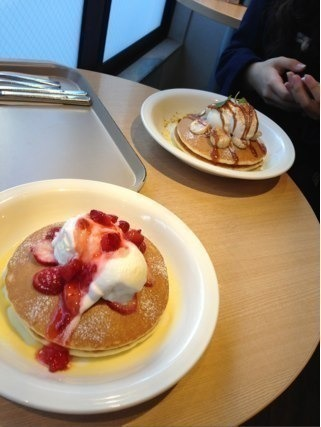
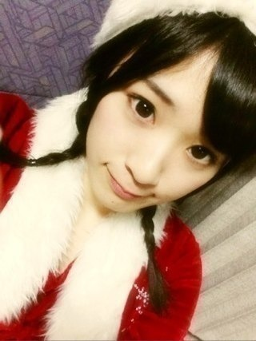
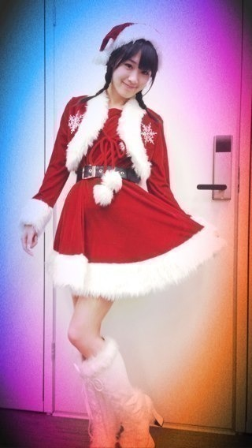
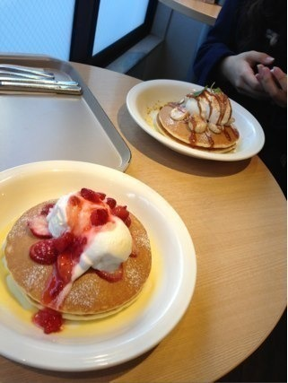
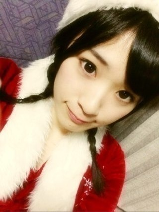
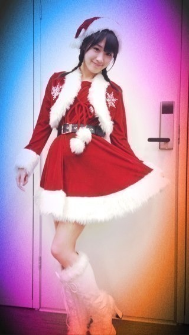

2012/1216Sun（´-`）.｡oO(かずみん×122
こんばんは！
いつも応援ありがとうございます！
前回の牡蠣美味しかったです。笑
今日は朝から美容院に行ってきました♪
いつもお世話になっている所なので
落ち着きましたよ(*^^*)
髪サラサラ〜（＾ω＾）
そして昼に陽菜ちゃんと
パンケーキを食べに！
15時半には原宿を
出なくてはならなかったのですが、
まぁ3時間もあれば余裕！
と思っていたら、
まさかのどの店も混んでる＼(°_°)／
ふらふらしてたら結局2人で
蕎麦とうどんを食べてました。笑
もちろん、私はとろろ小鉢つきで！
今度は余裕をもって行こうと
思います(￣▽￣)
でも最終的に...

駅近くのカフェで食べれました( ^ω^ )
陽菜ちゃんありがとう*\(^o^)/*
陽菜ちゃんは今から
フィギュアを買いに
行くそうです！！
---------
これから取材と乃木どこ収録です。
ちなみにこの前のロケで
サンタ企画をやりました♪


初の三つ編みですσ^_^;
どうですか〜？
それと昨日発売のEX大衆さんに
載っているので、
ぜひ見てみて下さい！
今日もEX大衆さんの取材
あるのです(^^)
いつもありがとうございます！
それにしても早起きすると
1日が長い＼(^o^)／
嬉しいなっ♪
これからお仕事ガジ
頑張ってきます！
それでは( ´ ▽ ` )ﾉ
いつも応援ありがとうございます！
前回の牡蠣美味しかったです。笑
今日は朝から美容院に行ってきました♪
いつもお世話になっている所なので
落ち着きましたよ(*^^*)
髪サラサラ〜（＾ω＾）
そして昼に陽菜ちゃんと
パンケーキを食べに！
15時半には原宿を
出なくてはならなかったのですが、
まぁ3時間もあれば余裕！
と思っていたら、
まさかのどの店も混んでる＼(°_°)／
ふらふらしてたら結局2人で
蕎麦とうどんを食べてました。笑
もちろん、私はとろろ小鉢つきで！
今度は余裕をもって行こうと
思います(￣▽￣)
でも最終的に...

駅近くのカフェで食べれました( ^ω^ )
陽菜ちゃんありがとう*\(^o^)/*
陽菜ちゃんは今から
フィギュアを買いに
行くそうです！！
---------
これから取材と乃木どこ収録です。
ちなみにこの前のロケで
サンタ企画をやりました♪


初の三つ編みですσ^_^;
どうですか〜？
それと昨日発売のEX大衆さんに
載っているので、
ぜひ見てみて下さい！
今日もEX大衆さんの取材
あるのです(^^)
いつもありがとうございます！
それにしても早起きすると
1日が長い＼(^o^)／
嬉しいなっ♪
これからお仕事ガジ
頑張ってきます！
それでは( ´ ▽ ` )ﾉ
2012/12/16 18:48
コメント(363)
サンタみん可愛い！
あと食べ過ぎじゃない？大丈夫？( ꒪⌓꒪)
あと食べ過ぎじゃない？大丈夫？( ꒪⌓꒪)
これから収録か！頑張って
渋谷～渋谷～渋谷だけが
いつも私の話を聞いてくれるから♪
今日も～今日も～今日もここで
何故だか泣けてくるんだ♪
（笑）
やさしさなら間に合ってるの出だしの
『真冬のプラタナスは〜心配そうに隣を歩く』ってかずみんよね？
渋谷～渋谷～渋谷だけが
いつも私の話を聞いてくれるから♪
今日も～今日も～今日もここで
何故だか泣けてくるんだ♪
（笑）
やさしさなら間に合ってるの出だしの
『真冬のプラタナスは〜心配そうに隣を歩く』ってかずみんよね？
色々仕事あっていいね！頑張れ！
三つ編み似合ってるんじゃない？？
あー、俺も牡蠣食べたいわ
三つ編み似合ってるんじゃない？？
あー、俺も牡蠣食べたいわ
かずみん可愛い(*^_^*)
三つ編み
似合ってる！
かずみんサンタ
めっちゃかわいい(*゜∀゜*)
お仕事頑張って下さい！！
ヤッシーです(^-^)v
牡蠣、大好き!!
パンケーキ大人気だな!!(笑)
サンタの格好最高!!
へばっまずな(^-^)/~~
牡蠣、大好き!!
パンケーキ大人気だな!!(笑)
サンタの格好最高!!
へばっまずな(^-^)/~~
おつかれ坂でーす
(･ω･)/V
開運音楽堂、楽しかったよー♪
ヽ(´▽｀)ﾉ
また出て欲しいな(*･ω･)ﾉ
あ、他の色んな番組でもかずみんの活躍
観たいなぁ(*^▽^*)
楽しみにしてまーすヽ(^o^)丿
んでは、
また来まぁしゅ(･ω･ゞ
(･ω･)/V
開運音楽堂、楽しかったよー♪
ヽ(´▽｀)ﾉ
また出て欲しいな(*･ω･)ﾉ
あ、他の色んな番組でもかずみんの活躍
観たいなぁ(*^▽^*)
楽しみにしてまーすヽ(^o^)丿
んでは、
また来まぁしゅ(･ω･ゞ
こんばんは♪
かずみんは本当に牡蠣好きですよね♪
パンケーキ甘そうだな(笑)
でも旨そう(^o^)
最近寒くなったから体に気をつけて下さい(^_^)
またブログ楽しみにしてます♪
短いけどバイバイ(*^▽^)/★*☆♪
かずみんは本当に牡蠣好きですよね♪
パンケーキ甘そうだな(笑)
でも旨そう(^o^)
最近寒くなったから体に気をつけて下さい(^_^)
またブログ楽しみにしてます♪
短いけどバイバイ(*^▽^)/★*☆♪
かずみん、こんばんわ～！
(*^-^)ノ
パンケーキってもしや、エッグなんちゃらかな？
ってか、パンケーキってそんなに人気あるんだ？じゃ、今度俺がオゴってあげるから思う存分食べなよ！(笑)
でも、生クリームはNGで
(￣▽￣;)
んで、三つ編みかずみんサンタカワユス～！そんなサンタだったらプレゼントいらないからサンタが俺のトコに来てくれるだけでうれしいよ(照)
まだお仕事中？頑張ってな！ファイト～！
o(*⌒O⌒)ｂ
またね！
(´・ω・`)/~~~
ポジティブsay！
(*^-^)ノ
パンケーキってもしや、エッグなんちゃらかな？
ってか、パンケーキってそんなに人気あるんだ？じゃ、今度俺がオゴってあげるから思う存分食べなよ！(笑)
でも、生クリームはNGで
(￣▽￣;)
んで、三つ編みかずみんサンタカワユス～！そんなサンタだったらプレゼントいらないからサンタが俺のトコに来てくれるだけでうれしいよ(照)
まだお仕事中？頑張ってな！ファイト～！
o(*⌒O⌒)ｂ
またね！
(´・ω・`)/~~~
ポジティブsay！
かずみぃぃぃぃぃぃいいいん＼(^o^)／
HTC J Butterfly買ったよー
結局赤にした（笑）
デカ過ぎやんなあれ((´･ω･`;))
まぁ慣れたらiPhoneがミニチュアに見えるわw
美容院行ったんだ～
そろそろ俺も髪きりにいかなゃ＞＜
原宿でパンケーキとか洒落乙やんな～(｡≧ω≦)ﾉ
流行りのエッグスンシングスには行かないの？笑
乃木ヲタの人も結構行ってるみたいだよねww
そばうどんとか飴と鞭らしいチョイスやね
とろろいいねー！！
でもお勧めは鴨せいろかなー
鴨せいろマジ美味いで(*≧ω≦*)
サンタコス鬼かわっ
名古屋個別もサンタコスプレなのかなーっ!??
かずみんがサンタのコスしたら絶対ファンの人嬉しいよね!! うらやまぁぁぁあヽ(；▽；)ノ
最高のクリスマスプレゼントやん！笑
俺は家で指くわえて待ってるかなー(泣)
取材＆お仕事がんばって!!
今年も残り少ないけど、思い返した時にいい一年だったって思えるようにしたいねっ☆
☆☆☆(なお・ω・やん)☆☆☆
HTC J Butterfly買ったよー
結局赤にした（笑）
デカ過ぎやんなあれ((´･ω･`;))
まぁ慣れたらiPhoneがミニチュアに見えるわw
美容院行ったんだ～
そろそろ俺も髪きりにいかなゃ＞＜
原宿でパンケーキとか洒落乙やんな～(｡≧ω≦)ﾉ
流行りのエッグスンシングスには行かないの？笑
乃木ヲタの人も結構行ってるみたいだよねww
そばうどんとか飴と鞭らしいチョイスやね
とろろいいねー！！
でもお勧めは鴨せいろかなー
鴨せいろマジ美味いで(*≧ω≦*)
サンタコス鬼かわっ
名古屋個別もサンタコスプレなのかなーっ!??
かずみんがサンタのコスしたら絶対ファンの人嬉しいよね!! うらやまぁぁぁあヽ(；▽；)ノ
最高のクリスマスプレゼントやん！笑
俺は家で指くわえて待ってるかなー(泣)
取材＆お仕事がんばって!!
今年も残り少ないけど、思い返した時にいい一年だったって思えるようにしたいねっ☆
☆☆☆(なお・ω・やん)☆☆☆
こんばんは、お疲れさまです
三つ編み凄く良いです。可愛いです
即待受にしました
乃木どこ収録頑張ってくださいね
三つ編み凄く良いです。可愛いです
即待受にしました
乃木どこ収録頑張ってくださいね
かずみんのサンタ可愛いすぎる(Ｔ＿Ｔ)
パンケーキ食べれてよかったね
今メンバーの中でも人気だよね！エッグスンシングスだっけ
乃木どこのクリスマス企画楽しみ
三つ編みかわいいぞ～
サンタかずみんも超かわいいー
お仕事がんばって＼(^o^)／
ファイト(V)o￥o(V)
かずみん、Hello！(^o^)/
あぁ、牡蠣が食べたい…(笑)。
パンケーキも食べたい…(笑)。
で、三つ編み、凄く似合ってるじゃん！
初めてとは思えないし(*^^*)！
ホントに、やったこと無かったっけ(笑)？
それにしても、こんなサンタさんがもし家に来てくれたら、なんとかして、引き留めちゃうなー( ´艸｀)
食べ物もイロイロ出してあげてね…(笑)。
じゃ、今度は、生で三つ編みが見られることを期待して…( ´艸｀)
お仕事、ファイトだよー！
あぁ、牡蠣が食べたい…(笑)。
パンケーキも食べたい…(笑)。
で、三つ編み、凄く似合ってるじゃん！
初めてとは思えないし(*^^*)！
ホントに、やったこと無かったっけ(笑)？
それにしても、こんなサンタさんがもし家に来てくれたら、なんとかして、引き留めちゃうなー( ´艸｀)
食べ物もイロイロ出してあげてね…(笑)。
じゃ、今度は、生で三つ編みが見られることを期待して…( ´艸｀)
お仕事、ファイトだよー！
サンタコスきゃわ(σ*´∀｀)
今からお仕事大変だろうけど頑張って！
こうき
にゅんʕ •́؈•̀ ₎
たかやまってた！(笑)
川後さんとデートいいなあ(´Д` )←
ととろはうまいー！！！*\(^o^)/*
フィギュア買いに行くとか
ヲタク過ぎます(^-^)(涙)
サンタかずみん
かわいい(o^^o)
アメイジング＼(^o^)／
今日も一日
おつかずみん♪♪♪
☆☆☆☆☆☆プーさん☆☆☆☆☆☆
たかやまってた！(笑)
川後さんとデートいいなあ(´Д` )←
ととろはうまいー！！！*\(^o^)/*
フィギュア買いに行くとか
ヲタク過ぎます(^-^)(涙)
サンタかずみん
かわいい(o^^o)
アメイジング＼(^o^)／
今日も一日
おつかずみん♪♪♪
☆☆☆☆☆☆プーさん☆☆☆☆☆☆
俺は原宿いこうと思ってたんだけど下北沢行ったことなかったからそっちに行っちゃった！
かずみんに会いたかった～～(>_<)
かずみんのサンタバージョン可愛すぎる♪
またコメントしますね！
アメージングヽ(・∀・)ノ
かずみんに会いたかった～～(>_<)
かずみんのサンタバージョン可愛すぎる♪
またコメントしますね！
アメージングヽ(・∀・)ノ
かずみんやふーい(o・・o)/
これから仕事とかたいへんやん！
サンタの衣装いいね
やまちゃん絶対沸くわ(笑)
あっ!?やまちゃんの事やねんけどなー
これから「ちゃんやま」って呼ぶから
把握ヨロシク(笑)
あと１週間やでガジ楽しみやー
今度はかずみん１枚だけじゃないから睨まんといてなww
じゃあ乃木どこ見て寝るわ
ほなねﾉｼ
これから仕事とかたいへんやん！
サンタの衣装いいね
やまちゃん絶対沸くわ(笑)
あっ!?やまちゃんの事やねんけどなー
これから「ちゃんやま」って呼ぶから
把握ヨロシク(笑)
あと１週間やでガジ楽しみやー
今度はかずみん１枚だけじゃないから睨まんといてなww
じゃあ乃木どこ見て寝るわ
ほなねﾉｼ
かずみん、おつかれさま^^
なるほど、原宿のそば屋ではパンケーキが
食べられると・・・(違
それはそうとサンタ！
三つ編み・・・(´Д`)ﾊｧﾊｧ
家に来てよ！俺、いい子だよ！ｗｗｗ
朝早いと、時間が長く感じるからお得だよね！
でも俺明日から一週間、仕事で4時半起きなんだ・・・。
早過ぎるにも程があるよ、かずみさん・・・ｗ
なるほど、原宿のそば屋ではパンケーキが
食べられると・・・(違
それはそうとサンタ！
三つ編み・・・(´Д`)ﾊｧﾊｧ
家に来てよ！俺、いい子だよ！ｗｗｗ
朝早いと、時間が長く感じるからお得だよね！
でも俺明日から一週間、仕事で4時半起きなんだ・・・。
早過ぎるにも程があるよ、かずみさん・・・ｗ
かずみんこんばんわー


今日も 日お疲れ様
日お疲れ様

今日は 原宿に
原宿に パンケーキを…
パンケーキを…
ってメンバー の
の
パンケーキ屋行く率ねー

メンバーがこれだけ行ってる んなら
んなら
朝行ったら
 会えちゃったりするのかな
会えちゃったりするのかな
そうだったら 超
超 ラッキー
ラッキー
今度行ってみよーーー
と、言うことで 結局
結局
混んでて 入れず
入れず 別のお店へ
別のお店へ
まぁそういうこともあるよねー
ではでは、明日もお仕事

頑張っていきましょうーー
たーちゃんより
今日も
今日は
ってメンバー
メンバーが
朝
そうだったら
今度
と、言うことで
混んでて
まぁ
ではでは、明日も
頑張って
たーちゃんより
かずみん(=^x^=)
可愛い(((o(*ﾟ▽ﾟ*)o)))
食べすぎるとふとるよんっ（笑）
サンタさんだぁ(￣▽￣)
握手会たのしみんっ(^_^)
可愛い(((o(*ﾟ▽ﾟ*)o)))
食べすぎるとふとるよんっ（笑）
サンタさんだぁ(￣▽￣)
握手会たのしみんっ(^_^)
こんばんは。
サンタさんのかわいいですね三つ編み。
パンケーキ食べれて良かったね。
蕎麦とうどんも美味いけどな。
美容室サラサラかずみんもお目にかかりたいですね。
お仕事がんばってくれい。
じゃあね。
サンタさんのかわいいですね三つ編み。
パンケーキ食べれて良かったね。
蕎麦とうどんも美味いけどな。
美容室サラサラかずみんもお目にかかりたいですね。
お仕事がんばってくれい。
じゃあね。
かずみんいつもお疲れ様(^^)
ケンジでっすε=ε=┏( ・_・)┛==卍
今日の夕飯はジョナサンでカキフライ定食食べたわ(￣∀￣)
美味かった♪笑
俺は蕎麦は笊でとろろ派(^^)v
三つ編み似合ってるし、サンタコス似合ってるよ(^^)v
高山サンタからのプレゼント期待してます♪笑
EX大衆見るね(^^)
仕事頑張ってな(^∀^)ノ
俺も頑張るわ♪
今日の残り時間はもう後少しだけど、今日も明日も1日お互いにファイティン♪
またね(^^)
ケンジ♪
ケンジでっすε=ε=┏( ・_・)┛==卍
今日の夕飯はジョナサンでカキフライ定食食べたわ(￣∀￣)
美味かった♪笑
俺は蕎麦は笊でとろろ派(^^)v
三つ編み似合ってるし、サンタコス似合ってるよ(^^)v
高山サンタからのプレゼント期待してます♪笑
EX大衆見るね(^^)
仕事頑張ってな(^∀^)ノ
俺も頑張るわ♪
今日の残り時間はもう後少しだけど、今日も明日も1日お互いにファイティン♪
またね(^^)
ケンジ♪
サンタかずみん♡
可愛いゆす(^_^)/
そして スタイルいいなあ！
開運音楽堂☆
見たよ！
アメージング☆
やられっぱなし(^-^;)
ツインかずみん♡も
可愛いゆす(^_^)/
可愛いゆす(^_^)/
そして スタイルいいなあ！
開運音楽堂☆
見たよ！
アメージング☆
やられっぱなし(^-^;)
ツインかずみん♡も
可愛いゆす(^_^)/
わぁ～三つ編みいいね！(≧▽≦)
今日の乃木どこ楽しみにしてる♪
かずみんのグループ終わっちゃったけど。。。
かずみん推しだから寂しいけど(*ﾟдﾟ*)
サンタ姿ガジかわいい（●＾o＾●）
お仕事ガジ頑張ってね！！
今日の乃木どこ楽しみにしてる♪
かずみんのグループ終わっちゃったけど。。。
かずみん推しだから寂しいけど(*ﾟдﾟ*)
サンタ姿ガジかわいい（●＾o＾●）
お仕事ガジ頑張ってね！！
早起きはいいですね♪
サンタ可愛いです！
サンタ可愛いです！
どーも！オレンジです！
かずみぃぃぃぃぃん！
もうすぐ発売だね！
テスト終わって安心のオレンジ(笑)
握手会ももうすぐだしたのしみだな(^o^)/
サンタ可愛い(*^^*)
俺は朝から夕方まで秋葉にいましたよっとw
原宿いけばよかったなー((笑
とりま風邪は引かないようにね(*_*)
それじゃあこの辺で！
今日はお疲れ様(*^^*)
明日も頑張ろう
愛羅武勇
 オレンジ
オレンジ
かずみぃぃぃぃぃん！
もうすぐ発売だね！
テスト終わって安心のオレンジ(笑)
握手会ももうすぐだしたのしみだな(^o^)/
サンタ可愛い(*^^*)
俺は朝から夕方まで秋葉にいましたよっとw
原宿いけばよかったなー((笑
とりま風邪は引かないようにね(*_*)
それじゃあこの辺で！
今日はお疲れ様(*^^*)
明日も頑張ろう
愛羅武勇
みつあみ似合うね&sF9D7;
僕にプレゼントくれぇ☆
そのサンタ企画の乃木どこ楽しみにしてます
かずみんこんばんは
相変わらず仲良しだね～
陽菜ちゃんと入れ替わりたいくらい
陽菜ちゃんが羨ましい(>_<)
パンケーキ食べれたんだね
よかったよかった
MJ観たよ＼(^o^)／
セーラー可愛いねぇ
かずみんのセーラー姿大好き
そして、サンタも可愛い
大衆も買うね(*^^*)
今月、かずみんづくしや～(笑)
早くかずみんに会いたいよ～
今日もかずみんが大好きです
三つ編み似合ってるよ
可愛い(〃▽〃)
可愛い(〃▽〃)
かずみん( ｀.∀´）y-
カズミクロース可愛い＼(^o^)／
脚がきれいゆー
ひなぴょんフィギュアとかホンマもんのヲタクだな(´・ω・｀)
バイバイ
かずみんーーー！のサンタ姿ヤバい！！！
家にプレゼント置きにきて(>_<)ーーー(笑)
おひさにちょっと質問(^3^)/
かずみんってまだサンタ信じてる？(・・;)
握手会もあと一週間！！！！
それじゃ風邪ひかないように
アメイジング＼(^o^)／
家にプレゼント置きにきて(>_<)ーーー(笑)
おひさにちょっと質問(^3^)/
かずみんってまだサンタ信じてる？(・・;)
握手会もあと一週間！！！！
それじゃ風邪ひかないように
アメイジング＼(^o^)／
かずみんサンタ可愛すぎる！
三つ編みかわいいよ!
Ex大衆明日見るね♪
お仕事頑張って!
(´・ω・`)
三つ編みかわいいよ!
Ex大衆明日見るね♪
お仕事頑張って!
(´・ω・`)
かずみんお疲れ様☆写メのクリスマスぽいのめっちゃ可愛いo(^-^)oケーキもうまそうやな★今週は全握があるな！！
かずみーーーん！ヽ(^0^)ﾉ
今日も世界一可愛いね！
牡蠣食べすぎいいいいい(^^)ｷｬﾊﾊ
サンタヤバい！
ティファールなみに瞬間沸騰したじゃんか！
(>o<)
EX大衆見るね
らびゅ！
今日も世界一可愛いね！
牡蠣食べすぎいいいいい(^^)ｷｬﾊﾊ
サンタヤバい！
ティファールなみに瞬間沸騰したじゃんか！
(>o<)
EX大衆見るね
らびゅ！
でてましたね～いきなりだったんで驚きましたなも((((゜д゜;))))(〃▽〃)
にしてもサンタかずみんよかですな～～。プレゼント入れる時にアワワアワワ
しそうなイメージでやんすね(^_^;))))))コソコソ…(~▽~＠)♪♪♪
確かに目的地が混みごみってのはよくありますなも～～都内は確率が高く(笑)
まあ、それだけ店がありますからにゃ～運試しみたいなもんでやんしょ＞°))))彡(￣□￣;)!!
最近よんだ『謎解きディナー3』が面白すぎました。流石は東川先生といった感じでした
にしてもサンタかずみんよかですな～～。プレゼント入れる時にアワワアワワ
しそうなイメージでやんすね(^_^;))))))コソコソ…(~▽~＠)♪♪♪
確かに目的地が混みごみってのはよくありますなも～～都内は確率が高く(笑)
まあ、それだけ店がありますからにゃ～運試しみたいなもんでやんしょ＞°))))彡(￣□￣;)!!
最近よんだ『謎解きディナー3』が面白すぎました。流石は東川先生といった感じでした
こんばんは!!
かずみんサンタに来てほしい！
ぜひ、アメイジングを届けに来てくださーい(笑)
お仕事ガジ頑張ってね！
かずみんサンタに来てほしい！
ぜひ、アメイジングを届けに来てくださーい(笑)
お仕事ガジ頑張ってね！
三つ編みめちゃんこ可愛ぇぇがぁ！
何やっても可愛えぇねヽ(*´∀`)ﾉ
EX大衆買ってきます！
何やっても可愛えぇねヽ(*´∀`)ﾉ
EX大衆買ってきます！
高山サンタ可愛すぎです!!
ガストで牡蠣フライ食べました。そしたら、なんでか知らないけれどチョコちゃんを思い出しました。笑： かずみんサンタの衣装かわいい。すごく似合います。
おつかれかずみん～
サンタコスめっちゃかわい～～
ウチにきてぁ～～～～～
今日ちょっと早起きしてみたけどいいもんだね
目標は早寝早起き朝ごはんだけど難しいなw
明日からも一週間頑張ろ～
かずみんふぁいっとぉ～
サンタコスめっちゃかわい～～
ウチにきてぁ～～～～～
今日ちょっと早起きしてみたけどいいもんだね
目標は早寝早起き朝ごはんだけど難しいなw
明日からも一週間頑張ろ～
かずみんふぁいっとぉ～
サンタさんかわいい///
こんなかわいいサンタさんが
私の家に来たらいいのになー(´・ω・｀)
かずみサンタさん、待ってます。(笑)
こんなかわいいサンタさんが
私の家に来たらいいのになー(´・ω・｀)
かずみサンタさん、待ってます。(笑)
更新ありがと＼(^o^)／
また飴鞭で出かけたのかww
日曜に原宿は･･･(笑)
原宿、飴鞭、うどんと蕎麦
すごいシュール(笑)
やばい(//∇//)
サンタ可愛すぎる！！
去年のサンタをはるかに上回ってる(笑)
くっそかわいい(//∇//)
ゆみ姉との２ショットを壁紙にしてたけど変えるわ←
あ、そういえばクリスマスカード送った＼(^o^)／
ぶっちゃけクリスマス10日前に送ったから年越してから届くかも････(´･ω･)
あ！あとね！ポテトさんも送ったってよ＼(^o^)／
EX大衆まじか･･･公式しかチェックしてないから全然ちゃんとかずみんが出てるのチェックできない(´□｀)
明日絶対見るね(`･ω･´)
お仕事お疲れ様。
そして明日もお仕事頑張ってね(･д´･+)９
ではでは
レオモンとエンジェモン狩ってくる←
また飴鞭で出かけたのかww
日曜に原宿は･･･(笑)
原宿、飴鞭、うどんと蕎麦
すごいシュール(笑)
やばい(//∇//)
サンタ可愛すぎる！！
去年のサンタをはるかに上回ってる(笑)
くっそかわいい(//∇//)
ゆみ姉との２ショットを壁紙にしてたけど変えるわ←
あ、そういえばクリスマスカード送った＼(^o^)／
ぶっちゃけクリスマス10日前に送ったから年越してから届くかも････(´･ω･)
あ！あとね！ポテトさんも送ったってよ＼(^o^)／
EX大衆まじか･･･公式しかチェックしてないから全然ちゃんとかずみんが出てるのチェックできない(´□｀)
明日絶対見るね(`･ω･´)
お仕事お疲れ様。
そして明日もお仕事頑張ってね(･д´･+)９
ではでは
レオモンとエンジェモン狩ってくる←
高山さん、こんばんは。
なるほど、都内でパンケーキ食べるのはとても大変である、と（メモメモ）。高山さんと川後さんはパンケーキ難民になってしまったのですね（笑）。最終的にはパンケーキ食べられてよかったですね。
高山さんサンタ・クロース、きれい。『乃木坂って、どこ？』の放送を楽しみにしています。
さらばだ、また会おう！（気球に乗って去る～）
なるほど、都内でパンケーキ食べるのはとても大変である、と（メモメモ）。高山さんと川後さんはパンケーキ難民になってしまったのですね（笑）。最終的にはパンケーキ食べられてよかったですね。
高山さんサンタ・クロース、きれい。『乃木坂って、どこ？』の放送を楽しみにしています。
さらばだ、また会おう！（気球に乗って去る～）
こんばんは
パンケーキ美味しそうですね。
最近食べていないなぁー･･･。
いいなぁー。・・・。・・・。・。・。
お疲れ様です！！
牡蠣美味しかったんですか、良かったですね(≧∇≦)
美容院行ってきたんですかー、髪サラサラいいですねー(*´∀｀*)
パンケーキじゃなくて蕎麦とうどん食べたんですか(°д°)
うん！余裕を持っていくべきです！！
最終的に食べられたんですね！
美味しそうだな(´ω`)
サンタ企画ってもうしたんですね(°д°)
三つ編みのかずみんサンタめっちゃ可愛い、可愛すぎる(*´`)
雑誌チェックせねばφ(.. )ﾒﾓﾒﾓ
仕事頑張ってください！
ではー(￣^￣)ゞ
牡蠣美味しかったんですか、良かったですね(≧∇≦)
美容院行ってきたんですかー、髪サラサラいいですねー(*´∀｀*)
パンケーキじゃなくて蕎麦とうどん食べたんですか(°д°)
うん！余裕を持っていくべきです！！
最終的に食べられたんですね！
美味しそうだな(´ω`)
サンタ企画ってもうしたんですね(°д°)
三つ編みのかずみんサンタめっちゃ可愛い、可愛すぎる(*´`)
雑誌チェックせねばφ(.. )ﾒﾓﾒﾓ
仕事頑張ってください！
ではー(￣^￣)ゞ
お疲れ様！！！
三つ編み似合っていて可愛いですよ！！
一実サンタ、なんかプレゼントくれ～。 一実のトナカイになります!!
ブログ更新、ありがとうございます。
EX大衆、見ますね。
楽しみにしています。
一実さんのサンタさん、よく似合ってますよ。
三つ編み、可愛らしい。
乃木坂センター試験、2日目と3日目はできました。
今日の乃木どこ、もちろん見ます。
EX大衆、見ますね。
楽しみにしています。
一実さんのサンタさん、よく似合ってますよ。
三つ編み、可愛らしい。
乃木坂センター試験、2日目と3日目はできました。
今日の乃木どこ、もちろん見ます。


かずみんかわいい&iF99D;
サンタ似合う